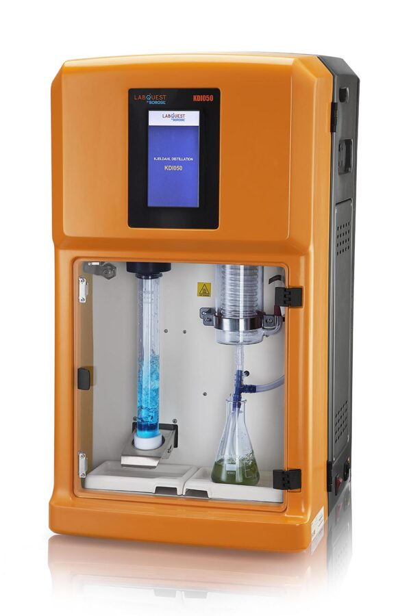

Day 1 · Protein nitrogen
Kjeldahl Magnus Distillation Unit
Smart, in-built application library for Kjeldahl Nitrogen analysis — protein in milk & dairy, food, feed, grains, cereals, oilseeds, meat and beverage matrices.
- Touchscreen, in-built protocols
- Auto steam generation & titration
- Compact bench footprint